Не буду расписывать всю пользу и все возможности 3D печати, скажу просто, что это очень полезная вещь в быту. Приятно иногда осознавать, что ты сам можешь создавать различные предметы и чинить много различной техники, в которой используются пластиковые механизмы, различные шестерни, крепежи...
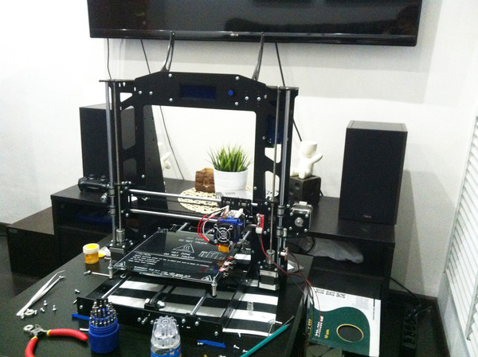
Сразу хотелось бы внести ясность - почему не стоит покупать дешманский китайский принтер за 15 тыс. руб. Как правило они идут с акриловыми или фанерными корпусами, печать деталей с таким принтером превратиться в постоянную борьбу с жесткостью корпуса, калибровками и прочими событиями которые омрачат всю прелесть владения принтером.
Акриловая или деревянные рамы весьма гибкие и легкие, при печати на повышенных скоростях их серьезно колбасит, за счет чего качество конечных деталей оставляет желать лучшего. Владельцы таких рам часто колхозят различные усилители/уплотнители и постоянно вносят изменения в конструкцию, убивая тем самым свое время и настроение заниматься именно печатью, а не доработкой принтера.
Стальная рама даст возможность насладиться именно созданием деталей, а не борьбой с принтером…
Следуя моему небольшому руководству, вы не закажете лишнего и не спалите свой первый комплект электроники, как это сделал я. Хотя это и не так страшно, стоимость деталей и запчастей к этому принтеру копеечная.
Руководство рассчитано в основном на новичков, опытные гуру 3D печатников скорее всего не найдут здесь для себя ни чего нового. А вот те, кто хотел бы приобщиться, после сборки такого комплекта будут четко понимать, что для чего, к чему. При этом не требуется специальных навыков и инструментов, достаточно паяльника, набора отверток и шестигранников.
Ссылки прикрепляю без всякого реферального шлака, потому, как пилю свои посты без цели нажиться или заработать три копейки.
Самостоятельный заказ деталей
Примечание: стоимость актуальная на Январь 2017 года.
1. Основа для принтера – рама, чем она крепче и тяжелее, тем лучше. Тяжелую и крепкую раму не будет колбасить при печати на повышенных скоростях, тем самым качество деталей будет оставаться достаточно приемлемым.
Мой выбор пал на стальную раму от российского производителя
Стоимость: 4900 руб. за шт.
Рама, идет со всем необходимым крепежом. Винтиков и гаечек ребята кладут с запасом.
2. Направляющие валы и шпильки M5. Резьбовые шпильки и направляющие валы не идут в комплекте с рамой, хотя на картинке они есть.
2.1 Полированные валы идут комплектом из 6 штук
Стоимость: 2850 руб. за шт.
Возможно найдете и подешевле, если будете искать то необходимо брать обязательно полированные, иначе все косяки валов, отразятся на деталях и общем качестве.
2.2 Шпильки M5 необходимо приобрести парой
Стоимость: 200 руб. за шт.
Это по сути обычные шпильки, которые можно приобрести и в строительном магазине, главное, чтоб они были как можно более ровными. Проверить их не сложно, нужно положить шпильку на стекло и прокатить её по стеклу, чем лучше катается, тем ровнее шпилька, валы проверяются соответствующим способом.
В общем, то больше нам от этого магазина ни чего не надо, ибо там дикая наценка на то же самое, что можно приобрести у китайцев.
3. Комплект RAMPS 1.4 + Arduino Mega 2560 R3 + шаговые драйверы A4988
Стоимость комплекта: 1045 руб.
RAMPS 1.4 - Плата расширения для ардуины. Именно к ней подключается вся электроника, в неё вставляются драйверы двигателей. За всю силовую часть принтера отвечает она. В ней нет мозгов, по сути гореть и ломаться в ней нечему, запасную можно не брать.
Arduino Mega 2560 R3 – Мозг нашего принтера, на который мы будем заливать прошивку. Советую взять запасной, по неопытности его легко спалить например вставив неправильно драйвер шагового двигателя или перепутав полярность при подключении концевика. Многие с этим сталкиваются и я в том числе. Дабы Вам не пришлось неделями ждать новую, берите сразу в запас еще хотя бы одну.
Шаговые драйверы A4988 отвечают за работу моторов, желательно приобрести еще один комплект запасных. На них есть построечный резистор, не крутите его, возможно он уже выставлен на необходимый ток!
Стоимость: 679 руб. за шт.
Стоимость: 48 руб. за шт.
4. Регулятор напряжения понижающий
Стоимость: 75 руб. за шт.
Он необходим для защиты нашей ардуино, в ардуине есть свой понижающий регулятор с 12v на 5v но он крайне капризен, сильно греется и быстро умирает.
Стоимость комплекта: 2490 руб.
В комплекте 5 штук, нам необходимо только 4. Можно поискать комплект из четырех, но я взял весь комплект, пусть будет один запасной, плюс его можно будет пустить на апгрейд и сделать второй экструдер, чтоб печатать поддержки вторым экструдером или печатать двухцветные детали.
6. Комплект ремней, подшипников и муфт
Стоимость комплекта: 769 руб.
В этом комплекте есть все необходимое для данного принтера.
7. Механические ограничители - необходимо 3 штуки
Стоимость: 23 руб. за шт.
Возьмите на всякий случай 4 штуки, пусть один будет запасным, стоимость копеечная, а без такой мелкой детали печатать не получится, вдруг придет бракованная.
8. Дисплей с встроенным картридером
Стоимость: 501 руб. за шт.
В его задней части есть картридер, в который в дальнейшем вы будете вставлять карту памяти с моделями для печати. Можно взять один запасной, если вы где то неправильно подключите какой то элемент, то скорее всего он сдохнет самым первым. Если планируете подключать принтер напрямую к компу и печатать с компа, то экран и вовсе не обязателен, печать можно производить и без него. Но как показала практика, с SD карточки печатать удобнее, принтер ни как не связан с компьютером и его можно ставить хоть в другую комнату не опасаясь, что комп зависнет или вы его нечаянно вырубите на середине печати.
Стоимость: 1493 руб. за шт.
Данный блок питания немного больше по габаритам, чем тот который должен быть, но он без особого труда влезает, а по мощности он с запасом.
10. Горячий стол
Стоимость: 448 руб. за шт.
Необходим для печати ABS пластиком. Для печати PLA и другими пластиками не дающими усадки при остывании, можно печатать не нагревая платформу, но стол обязателен, на него кладется стекло.
Стоимость: 99 руб. за шт.
12. Экструдер
Стоимость: 2795 руб. за шт.
Данный экструдер является «Директ» экструдером, то есть механизм подачи пластика происходит непосредственно перед его нагревательным элементом. Советую брать именно такой, он позволит вам печатать всеми видами пластика без особых напрягов. В комплекте есть все необходимое.
Стоимость: 124 руб. за шт.
Собственно, необходим для обдува PLA и прочих не быстро затвердевающих пластиков.
Стоимость 204 руб.
Он чуть больше, чем нужен. Больший кулер существенно уменьшит шум от принтера.
15. Запасные сопла
Стоимость 17 руб. за шт.
При засорении проще поменять сопла, чем чистить. Обратите внимание на диаметр отверстия, как вариант можно набрать разных диаметров и выбрать для себя, я предпочел остановиться на 0.3мм, качества получаемых деталей с таким соплом мне достаточно. Если качество не играет особой роли, берите сопло толще например 0.4. Печать будет в разы быстрее, но слои будут более заметны. Берите сразу несколько.
Стоимость 31 руб. за шт.
Его очень легко обломить, будьте аккуратны. Сверло можно не брать проще как я написал выше набрать запасных сопел и менять их, стоят они копейки, а засоряются крайне редко, при использовании нормальных пластиков и при наличии фильтра, который вы и напечатаете первым делом.
Стоимость 56 руб. за шт.
В комплекте 5 штук, 4 используем для стола, одну пружинку используем для ограничителя оси X.
18. Комплект для регулировки стола необходимо 2 комплекта
Стоимость 36 руб. за шт.
Эти комплекты нам нужны только ради длинных болтов, которыми мы в дальнейшем будем крепить экструдер.
19. Комплект проводов для подключения шаговых двигателей
Стоимость 128 руб. за шт.
20. Кусок обычного стекла на стол.
Можно заказать боросиликатное стекло, которое выдерживает повышенные температуры, я использую обычное оконное стекло, нагрев до 90 градусов оно выдерживает, а больше мне и не надо.
Это всё, что понадобится вам для сборки принтера.
Качество напечатанных деталей с таким комплектом будет практически таким же, как у принтеров дорогих брендов. Все зависит от дальнейших настроек, выбора нужной температуры и от прочих нюансов с которыми вы познакомитесь в процессе печати. Плюсом такого принтера по сравнению с дорогим "брендовым", я считаю возможность быстро, дешево и самостоятельно починить любую деталь, не потратив при этом нервов и денег.
Стоимость такого набора выходит не более 20 тысяч рублей.
Если брать этот этот принтер целиком, его стоимость на сегодня составляет 43900.
Заказав оснастку на али, мы получим выгоду порядка 24 тыс. при тех же комплектующих, а экструдер, который мы подобрали, в некотором плане даже лучше.
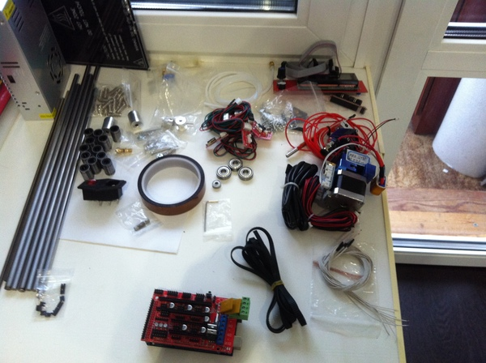
Ну а далее начинаем увлекательный процесс сборки, следуя официальной инструкции:
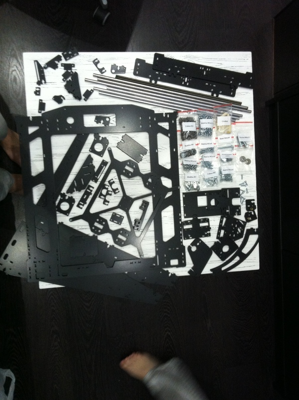
Процесс сборки достаточно увлекателен и чем-то напоминает сборку советского металлического конструктора.
Собираем всё по инструкции за исключением следующих пунктов
В пункте 1.1. в самом конце, где крепятся торцевые опоры НЕ СТАВИМ подшипники 625z впрочем мы их и не заказывали. Ходовые винты оставляем в свободном плавании в верхней позиции, это избавит нас от эффекта так называемого «Вобблинга».
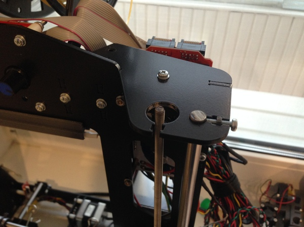
В пункте 1.4. на картинке присутствует черная проставка. В комплекте с рамой её нет, вместо неё идут пластиковые втулки, используем их.
В пункте 1.6. Держатель концевика оси Y крепим не к задней, а к передней стенке принтера, если этого не сделать, детали печатаются зеркально. Как я пытался в прошивке это победить, у меня не удалось. Для этого надо перепаять клемму на заднюю часть платы:
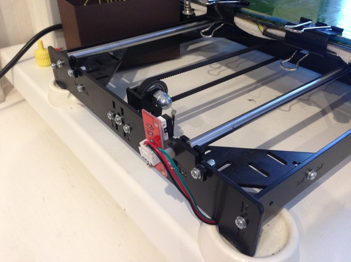
В пункте 2.4. у нас другой экструдер, но крепится он точно так же. Для этого нужны длинные болты, их мы берем из комплекта, который брали для регулировки стола (18 позиция). В наборе с рамой нет таких длинных болтов, как и в местных магазинах.
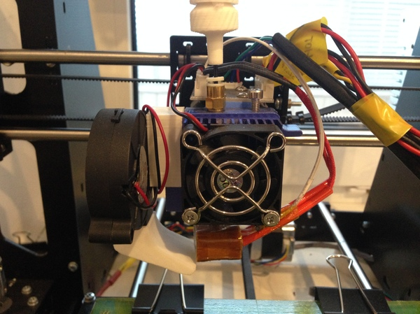
В пункте 2.6. мы начинаем сборку нашего бутерброда из ардуины и рампса и сразу же сделаем очень важную доработку, про которую редко пишут в мануалах, но тем не менее эта доработка очень важна для дальнейшей бесперебойной работы принтера.
Нам необходимо отвязать нашу ардуину от питания которое приходит с платы RAMPS.
Для этого выпаеваем или отрезаем диод с платы RAMPS .
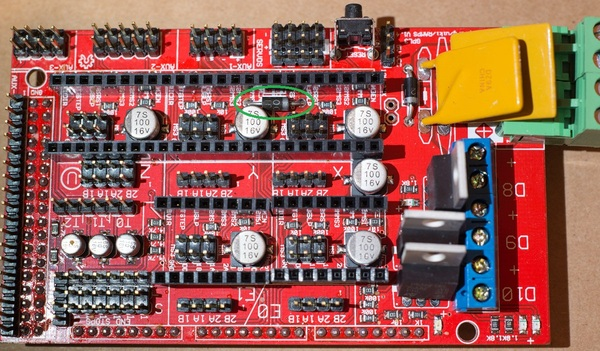
Припаиваем регулятор напряжения ко входу питания, который заблаговременно выставляем на 5v, попутно выпаивая стандартное гнездо питания. Приклеиваем регулятор кому куда удобнее, я приклеил на заднюю стенку самой ардуины.
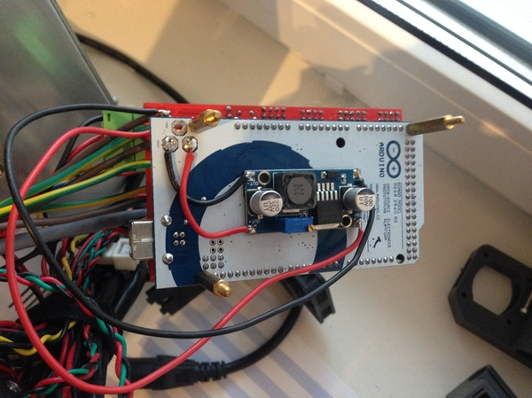
Питание от блока питания к RAMPS, я припаял отдельно к ножкам, чтоб оставить свободной клемму для подключения других устройств.
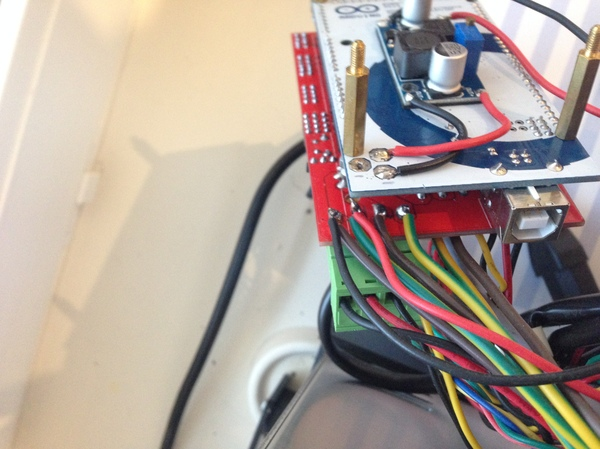
Далее укладываем все провода, можно купить специальную оплетку, можно как я, использовать стяжки или изоленту.
Перед запуском проверяем, что ни где ни чего не заедает, каретка двигается до ограничителя и обратно без препятствий поначалу все будет двигаться туго, со временем подшипники притрутся и все будет плавно. Не забудьте смазать направляющие и шпильки. Я смазываю силиконовой смазкой.
Еще раз смотрим, что ни где ни чего не коротит, драйверы шаговых двигателей поставлены ПРАВИЛЬНО согласно инструкции, иначе сгорит и экран и ардуина, ограничители тоже поставлены соблюдая необходимую полярность, иначе сгорит стабилизатор напряжения на ардуине.
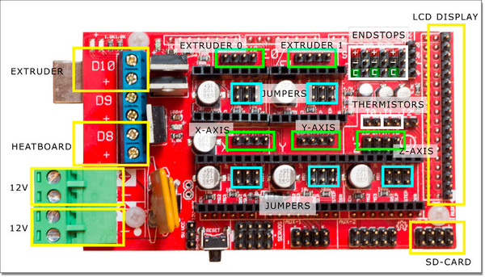
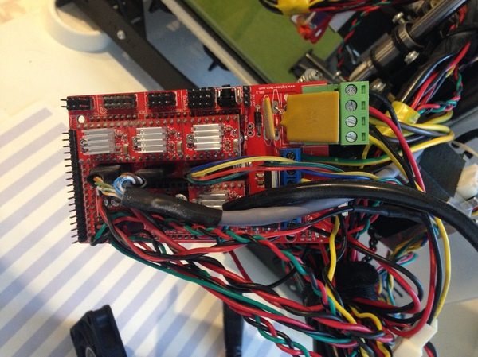
Если все подключено верно, можно переходить к следующей инструкции по эксплуатации:
Полезный материал по некоторым параметрам нашей прошивки
Мой настроенный и рабочий вариант прошивки под этот принтер и экструдер.
Он слегка откалиброванный под те детали, которые мы заказали.
Официальная прошивка от 3d-diy
Заливаем прошивку через IDE Arduino 1.0.6, выбираем на экране принтера auto home убеждаемся в правильном подключении концевиков и полярности шаговиков, если двигается в противоположную сторону, просто переверните клемму у мотора на 180 градусов. Если после начала движения слышен противный писк, это писк драйверов шаговиков. Надо подкрутить на них подстроечный резистор согласно инструкции. (http://3deshnik.ru/blogs/akdzg/pravilnaya-nastrojka-toka-dlya-shagovyx-dvigatelej)
Советую начать печатать с PLA пластика, он не капризен и хорошо прилипает к синему скотчу, который продается в строительных магазинах.
Я беру пластик фирмы Bestfilament. Брал фирму REC мне не понравилось как ложатся слои. Есть еще море различных брендов и пластиков, от резиновых до деревянных, от прозрачных до металлизированных… Еще одна фирма которую я порекомендую – Filamentarno У них чумовые цвета и отличный свой вид пластика с отличными свойствами.
Пластиком ABS и HIPS я печатаю на каптоновом скотче намазанном обычным клеем-карандашом из магазина канц-товаров. Такой способ хорош тем, что он не вонюч. Есть много других разных способов повышения адгезии детали к столу, об этом вы узнаете уже сами в процессе проб и ошибок. Все достигается опытным путем и каждый для себя выбирает свой способ.
Почему именно этот принтер на базе prusa i3?
1. Принтер всеяден. Печатать можно любыми доступными видами пластика и гибкими прутками. На сегодня рынок различных видов пластика достаточно развит, нет такой необходимости иметь закрытый бокс.
2. Принтер прост в сборке, настройке и обслуживании. Ковыряться с ним может даже ребенок.
3. Достаточно надежен.
4. Распространен, соответственно в сети море инфы о его настройках и модернизации.
5. Апгрейдопригоден. Можно заказать второй экструдер или экструдер с двумя печатными головками, заменить линейные подшипники на капролоновые или медные втулки, тем самым повысив качество печати.
6. Доступен по деньгам.
Фильтр для филамента.
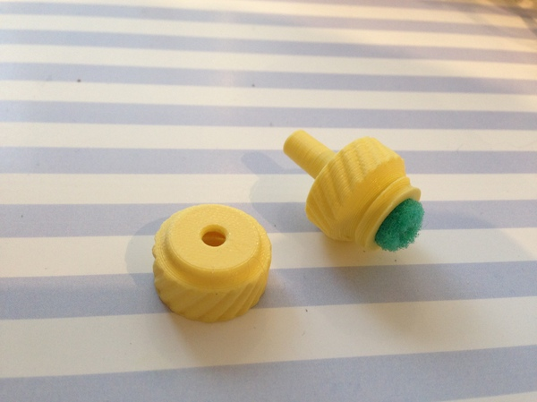
Печатал крепление для экструдера E3D V6 и печатал какое то время этим экструдером с боуден подачей. Но вернулся обратно на MK10.
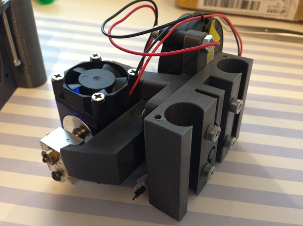
Приобрел вот такой апгрейд, в дальнейшем будем печатать двумя пластиками.
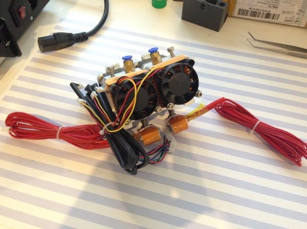
Утеплил стол для более быстрого разогрева. Какая то подложка с отражающим фольгированным слоем и клейкой основой. В 2 слоя.
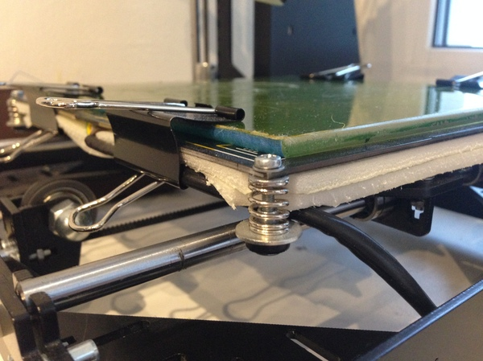
Подсветка из светодиодной ленты. В какой то момент надоело включать свет, для контроля печати. В дальнейшем планирую закрепить камеру и подключить к принтеру Raspberry PI, для удаленного наблюдения и отправки моделей в печать без передергивания флешки.
Для уменьшения шума от принтера необходимо подкладывать под него резиновые проставки, можно их напечатать, а пока, я обошелся вот такими силиконовыми упорами когда то купленными под стиральную машинку.
Чехол для телефона изготовлнный на таком принтере
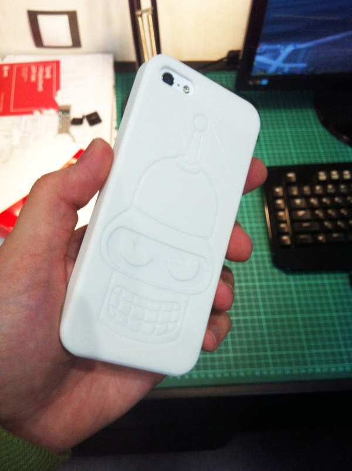
Жена делает вот такие формы для печенья.
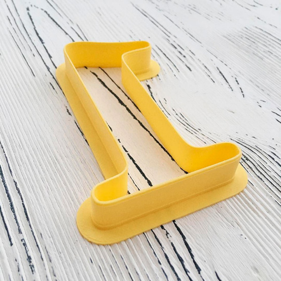
Как вариант у кого есть дети, такой конструктор будет очень полезным и интересным, приобщить детей к этому направлению будет не сложно, им и самим будет в кайф печатать для себя различные игрушки, конструкторы и умных роботов.
Кстати по стране сейчас активно открываются детские технопарки, в которых детей обучают новым технологиям в том числе моделированию и трехмерной печати, иметь такой принтер дома будет очень полезно для увлеченного ребенка.
Будь у меня такая штука в детстве, моему счастью не было бы предела, а если к этому добавить различных моторов, ардуин, датчиков и модулей, у меня бы наверное и вовсе поплыла крыша от возможностей, которые передо мной бы открылись на тот момент.
Мы вместо этого, плавили пластмассу от старых игрушек и свинец из найденных на помойке аккумуляторов.
Всем, кто решит повторить, желаю удачной сборки и быстрого прибытия товаров с али ).
Спасибо за внимание, если есть вопросы, задавайте )
Весьма полезный русскоязычный ресурс, на котором вы найдете любую информацию по этому направлению: http://3dtoday.com
Тысячи тысяч готовых моделей для печати чего угодно: http://www.thingiverse.com
Так же есть сайт: http://3deshnik.ru